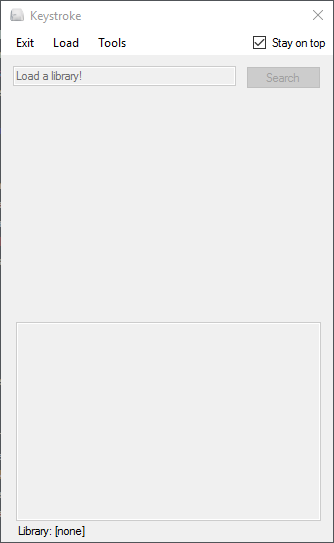

Keystroke is a sort of a personal wiki. You can take a collection of pages and make it a library, which you can easily share with others.
To use Keystroke, you’ll need to load a library.
Click on Load and navigate to the library’s loader file. Loader files can have any extension, but the .ks extension makes it easy to find them.
You can now search for something by typing the search term into the text box and pressing Enter or clicking the Search button.
The contents of the file will be displayed under the text box.
First of all, you'll need to create the basic folder structure. You can do this by going to Tools->Generate Library.
That’s all there is to it. For now, just leave the alias file blank.
Now you can begin making the pages. In Keystroke, navigate to Tools->Page Designer to create a page. Save it in the main folder. Put any images in the images folder.
Alternatively, you can make the page files by hand.
[image file]
[title]
[text, can be on multiple lines]
Alternatively you can do it youself. Make a folder in the pages folder. It should look life this:
-pages
--[your library name] # I'll call this the main folder from now on
---images # This is where you'll put all your images
---other
----alias.txt # This is where you'll put all the aliases.
--[loader file].ks # What you'll use to load the library
Next, you should set up the loader file.
loader
[library name]
[main folder name]
Let’s say you have a page called “dog”. You want the search term “puppy” to link to “dog”. You can do this with aliases. In Keystroke, navigate to Tools->Add Alias.
Alternatively, open the alias.txt file and remove “none”. Add the following line:
puppy|dog
Test it out by searching for “puppy”.